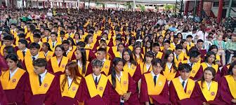
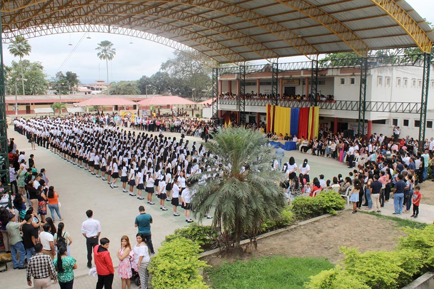
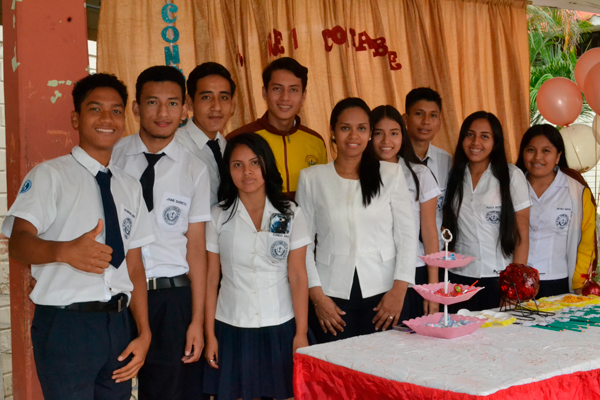
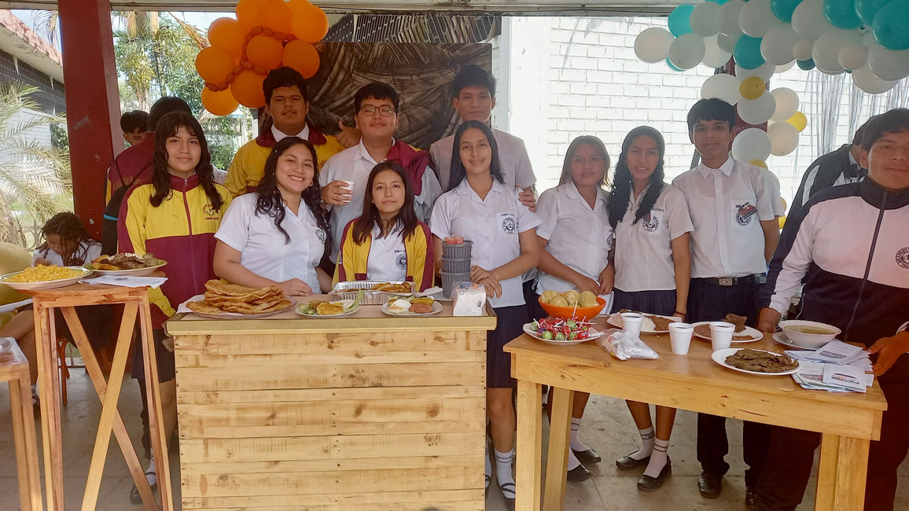
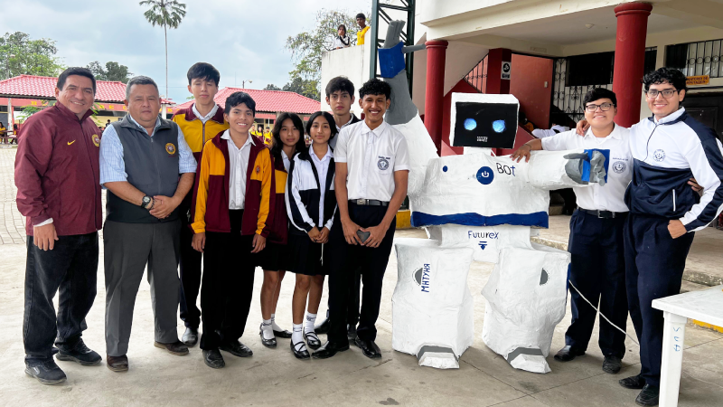
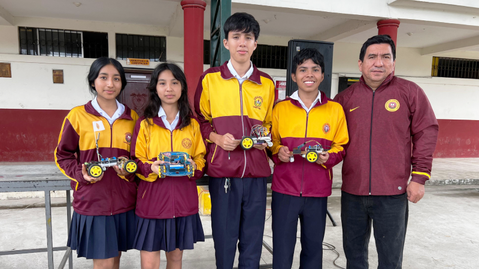

Bienvenido a la Aplicación Informativa
Esta aplicación ha sido diseñada para proporcionar una experiencia clara, sencilla y organizada sobre la Unidad Educativa Carmen Mora de Encalada. Aquí podrás encontrar información importante acerca de nuestra historia, las especialidades que ofrecemos y una sección completa de preguntas frecuentes para resolver tus dudas.
Desde este menú principal puedes navegar cómodamente entre las secciones, ya sea para conocer más sobre el legado institucional, explorar en detalle las características de cada especialidad o informarte sobre los horarios, materias y proyectos de grado.
Nuestro objetivo es brindarte una guía rápida y accesible que represente de manera fiel a nuestra institución y te facilite el acceso a información relevante en cualquier momento. ¡Gracias por utilizar esta aplicación!
Historia de la Institución

Su primer rector fue el señor Profesor Juan Arévalo Ordoñez, habido y experimentado, quien edifico las bases en donde se asentaría posteriormente el prestigio del plantel.
En el año lectivo de 1965-1966 se receptan las matriculas de 65 alumnos iniciando sus labores en el mes de mayo.
El doctor César Jaramillo Pérez, Ministro de Educación Pública, con resolución número 1912 del 29 de octubre de ese mismo año, autoriza el funcionamiento del Primer Curso Regular diurno, en la especialización de Comercio y Administración.
Cuando el Colegio inicia su año lectivo 1967-1968, y al haber sido renovado el Consejo, es nombrado como rector del Plantel, el señor Carlos Falquez Batallas, reemplazándolo al señor Juan Arévalo Ordoñez, quien había llevado con certeza la conducción del Establecimiento. El 10 de octubre de 1969, sucede un hecho de trascendencia histórica para el Plantel, cuando el entonces Presidente de la República, Dr. José María Velasco Ibarra, suscribió el decreto No. 2009, nacionalizándolo a partir del 1ro. de Abril de 1970.
Su personal Docente, reuniendo los requisitos establecidos por la Ley de Escalafón y Sueldos del Magisterio Nacional y de Defensa Profesional, continuó en el ejercicio de sus funciones.
La mística de trabajo del señor Carlos Falquez Batallas, de sus Consejos Directivos, de su personal Docente, Administrativo y de Servicio, en el lapso de 13 años, lograr situarlo en una posición envidiable.
En el año de 1971, y cuando el Colegio tenía en su Presupuesto la suma de S/ 1`020.00,oo inició una actividad que dio resultados positivos, al recibir la generosa ayuda de S/ 50.000.oo del pueblo pasajeño, para la adquisición del terreno, donde se construiría su edificio que vinieron a sumarse con los S/. 100.000, oo asignados por el Ministerio de Educación. En el año 1972, y con el mismo fin la I. Municipalidad de Pasaje, en su presupuesto, asignó la suma de S/. 70.000, oo. Con estos dineros y más los saldos sobrantes que el Colegio venía acumulando en Colecturía, se efectuó la compra de 28 metros cuadrados de terreno, ubicados en la margen izquierda del Canal de Riego del H. Concejo Provincial de El Oro, frente a la calle José Ochoa León, que conduce hasta el sitio Loma de Franco. Para esta adquisición, se contó con la buena predisposición del señor Luis Felipe Barriga Lavayen y de un lote de la familia Lavanda. La compra venta se la celebro el 10 de agosto de 1972, a un costo de S/313.000, oo.
En ese mismo año, se consideró la imperiosa necesidad de ampliar el área del terreno, por la densidad arquitectónica del edificio, adquiriéndose la cantidad de 9.000 metros cuadrados celebrándose la Escritura Pública con el señor Luis Felipe Barriga, en el año 1973. Las Autoridades del Colegio, contratan los servicios del Arq. Gilberto Oramas González, para la elaboración de los planos del edificio del Plantel. La concepción del edificio era monumental, calculada en S/. 14`000.000.oo, que requería más amplitud de terreno, haciéndose la nueva compra en el año 1977. Se hizo realidad su construcción en el año 1975, siendo el Arq. Gilberto Oramas, con la colaboración del Ing. Olmedo Roldán Sandoval, ejecutando los trabajos el DECE, obra terminada en el año de 1978.
Entro en servicio en el año 1979, siendo considerado para ese entonces unos de los mejores del país, con 1600 estudiantes, 80 profesores, 13 funcionarios administrativos y 7 en el Personal de Servicio.
Prof. Carlos Falquez Batallas, un hombre visionario, con sabiduría, coraje y dinamismo apoyado siempre en la tenacidad y empuje del consejo directivo personal docente, padres de familia y estudiantes, que en sus 13 años frente al rectorado cosecho frutos notables como los triunfos en el Campo Cultural, Artístico, Social y Deportivo.
Al tener que asistir a la Cámara Nacional de Representantes, en representación de El Oro, el señor Carlos Falquez Batalla, tuvo que renunciar del cargo de Rector, en el mes de junio de 1979, sucediéndole en el cargo el licenciado Ángel Valarezo Concha, en calidad de Vicerrector Titular.
Fiestas. Estudiantes están entusiasmados con la celebración de aniversario.La Junta General de Directivos y Profesores, el 28 de septiembre de 1979 elige al profesor Jorge Carmona Flores Rector del Colegio Nacional "Carmen Mora de Encalada", e inmediatamente solicitan su nombramiento al señor Ministro de Educación Y Cultura, esto es después de la renuncia del profesor Carlos Falquez Batallas, posesionándose el profesor Jorge Carmona Flores el 28 de Noviembre del año 1979, cumpliendo su función con dinamismo y calidad humana.
En 1983 la licenciada Elisabeth Beltrán de Guerrero como vicerrectora titular toma las riendas de la institución en vista de que el señor Jorge Carmona fue electo Presidente del Consejo Pasajeño.
El 22 de junio de 1989 el Ministro de Educación, designa a la señorita Dra. Carmita Jaramillo Ramón para ocupar el rectorado del colegio considerando su gran trayectoria de educadora y su afán de servir a esta institución, la misma que aprovechando sus amistades con ciudadanos pudientes y de noble corazón realizó gestiones para obtener su apoyo moral y económico a fin de cristalizar varias obras. En 1998, el colegio atraviesa un mal momento el mismo que sirvió para reflexionar y llenarnos de valor.
Pasaron entonces por el rectorado por muy poco tiempo los supervisores ingeniero José Idrovo, ingeniero Alcides Espinoza y el Profesor Vicente Cordero, el ingeniero Carlos Idrovo como miembro del Consejo Directivo y nuevamente como vicerrectora titular tenemos al frente del rectorado a la licenciada Elisabeth Beltrán de Guerrero, la misma que luego de cumplir con la Ley de Educación, gano el concurso de títulos, mérito y oposición para el cargo de rectora titular, posesionándose legalmente el 8 de julio de 2003, ejerciéndose su liderazgo en este colegio que ha llegado a ser uno de los grandes de la provincia, con desarrollo académico, científico, cultural, deportivo y social como producto del edificante trabajo de maestros, personal administrativo, de servicio, de alumnos y de padres de familia.
EL 8 de enero de 2009, la licenciada Elisabeth Beltrán de Guerrero, Mgs fue reemplazada en su función por la ingeniera Irma Pazmiño García, Mgs que luego de participar en el concurso de méritos y oposición resultó triunfadora, posesionándose del cargo legalmente el 12 de enero del presente año.
Continuando con el sendero del triunfo la ingeniera Irma Pazmiño García, Mgs, la institución ha obtenido.
En histórica sesión del 3 de febrero de 1965, el Ilustre Consejo Cantonal de Pasaje, presidido por el señor Alberto Serrano Zambrano he integrado por los Concejales señores Jacinto De la Rosa, Galo García Vallejo, Clemente Vaca Heredia, Agrecio Lomas Villacrés Héctor Encalada Sánchez, Julio Amaya Cabrera; como Secretario el Bate Pasajeño, señor Alejandro Campoverde Andrade, surgió la idea de crear un Instituto Municipal de Comercio y administración quedando resuelta esta inquietud, expidiéndose la ordenanza respectiva, llevando el nombre de una distinguida matrona orense para rendir de esta manera homenaje a la mujer de alto espíritu cívico y notables cualidades humanas señora Carmen Mora de Encalada.

Especialidades
En la Unidad Educativa Carmen Mora de Encalada ofrecemos tres especialidades:
Ciencias

La especialidad de Ciencias fomenta el pensamiento crítico, la investigación y el método científico. Los estudiantes desarrollan habilidades analíticas mediante prácticas de laboratorio y proyectos experimentales.
Asignaturas principales:
- Biología
- Química
- Física
- Matemáticas avanzadas
- Investigación científica
Horario aproximado: salida 13h10 – 13h30 según el día.
Proyecto de Grado: investigación científica o experimental con presentación final.

Contabilidad

La especialidad de Contabilidad forma estudiantes en procesos contables, financieros y administrativos, con énfasis en la aplicación práctica y el emprendimiento.
Asignaturas principales:
- Contabilidad General
- Contabilidad de Costos
- Administración
- Emprendimiento
- Tributación
Horario aproximado: salida 13h10 – 13h30 (según turnos y prácticas).
Pasantías: en empresas locales, estudios contables y oficinas administrativas.
Proyecto de Grado: implementación de sistemas contables, análisis financiero o plan de negocio.

Informática

La especialidad de Informática desarrolla competencias en programación, redes, bases de datos y diseño web. Los estudiantes realizan proyectos prácticos y pasantías que los acercan al mundo laboral.
Asignaturas principales:
- Programación
- Base de Datos
- Redes
- Diseño Web
- Ofimática avanzada
Horario aproximado: salida 13h10 – 13h30 (laboratorios pueden extender sesiones).
Pasantías: en empresas de tecnología, cabinas de internet y dependencias públicas.
Proyecto de Grado: desarrollo de software, aplicaciones o sitios web según el enfoque del estudiante.

Preguntas Frecuentes
- ¿Cuál es la nota mínima?
7/10. - ¿Es obligatorio jurar la bandera?
Sí. - ¿Cómo recuperar un trimestre?
Presentar actividades pendientes o rendir evaluaciones de recuperación según el cronograma institucional. -
Contacto:
Teléfono: (07) 291-5254
Celular: 0987970349
Dirección: OCHOA LEÓN entre JUBONES y CARLOS REGALADO.